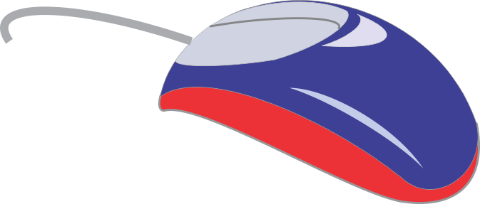

|
 |
 |
 |
 |
Herramienta curva de tres puntos
Dibuja trazos curvos
mediante la marcación de dos puntos fijos que señalan el final y el comienzo de
la línea y un tercer punto móvil que define la curvatura del trazo.
Para crear trazos con esta herramienta, activarla pulsando sobre su icono y seguir estos pasos:
- Pulse sobre la posición en la que comenzará el trazo.
- Arrastre y suelte el botón al llegar a la posición donde desee que termine el trazo.
- Arrastre el puntero en varias direcciones hasta que obtenga la curvatura deseada y cuando lo consiga suelte el botón del mouse.
Si desea añadir nuevos
trazos a una línea ya existente, situe el puntero (debera tomar la
forma de una flecha quebrada)sobre el extremo de la línea que desea
prolongar e inicie los tres pasos descriptos anteriormente.
Aunque las posibilidades de modelado de esta herramienta son limitadas, puede resultar una buena opción para iniciarse en el trazado de líneas curvas complejas.
Como practica realize el siguiente ejercicio:
Aunque las posibilidades de modelado de esta herramienta son limitadas, puede resultar una buena opción para iniciarse en el trazado de líneas curvas complejas.
Como practica realize el siguiente ejercicio:
